Autonomous World-Model-Guided Policy Learning from Unlabeled Monocular Video
October 2026 · Isaac Sim, Isaac Lab, V-JEPA 2
I built this project for Humanoid's robot learning technical challenge, which led to me winning a role on their robot learning team.
Motivation
My idea for this project was to build something that would actually matter for the way physical AI companies are trying to train robots right now. In my own past projects I have worked with reinforcement learning and with LLM planning for robot arms, and the same problem kept coming up. Every new task needs a person to build the scene, write and tune a reward, and babysit the training. It works, but it stops at one task, because the next task needs someone to do all of it again. That just doesn't scale to the amount of data you need to train a generalist humanoid.
So I wanted to attempt something that I knew would be a lot harder, but more rewarding and with more open problems in it, which is a fully automated pipeline with no human labelling and no hand tuning per task. You put in egocentric videos of people doing things, which companies are now collecting in huge amounts, and you get out policies in simulation that can adapt to new configurations of that task. If that works, every new hour of human video becomes training data for robots without anyone writing task-specific code, and the cost of teaching a robot a new task drops to the cost of recording someone doing it.
I also picked a few harder options on purpose. I went for two arms working on the same table instead of one, which means the policy also has to learn to share the space. The scope is kept quite wide as well, since the pipeline is designed to support any task that is about moving objects to where they belong. Sorting, tidying, packing and stacking all fit, while something like pulling a lever or turning a tap would probably not work and is out of scope.
Overview
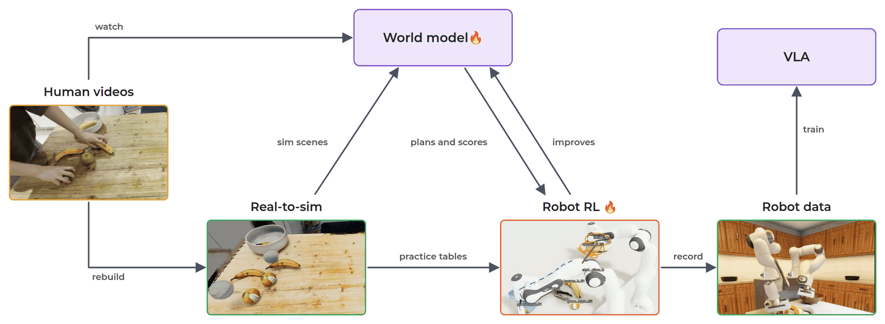
There is no task-specific reward anywhere, because the world model provides the goals and the scores, and nobody labels anything from cutting the videos to scoring the robot. The world model is also the planner, so it can propose plans it learned from people and then correct their physics in RL. Everything runs in NVIDIA Isaac Sim, which gives photoreal rendering, GPU physics and domain randomisation for the later sim-to-real step.
Data collection
I recorded 23 videos of myself tidying my kitchen table at a natural speed, 27.5 minutes in total, with nothing labelled. The tasks are putting fruit into a bowl, putting tools into a toolbox among cardboard boxes and other clutter, and stacking boxes, with the objects shuffled into a new layout between attempts. The clutter is on purpose, because working in less structured settings is one of the biggest challenges for humanoids.
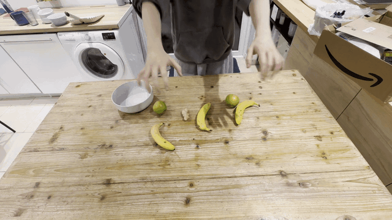
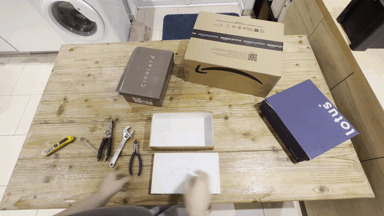
Working out the tasks in a video needs general knowledge about the world, so I used Gemini 2.5 Flash to mine the videos. It cuts long recordings into episodes, so nobody has to press start and stop, and for each episode it returns a generic task instruction, the objects involved and where they ended up. The prompt is task-agnostic and never names the objects or the task. From the 23 videos it finds 87 episodes, 52 tasks plus the resets between them, with 26 different instructions. A second language model then checks every cut against contact sheets of the frames and tightens the boundaries, so each episode starts when the first object moves and ends when the last one is at rest.
3D object and hand tracking
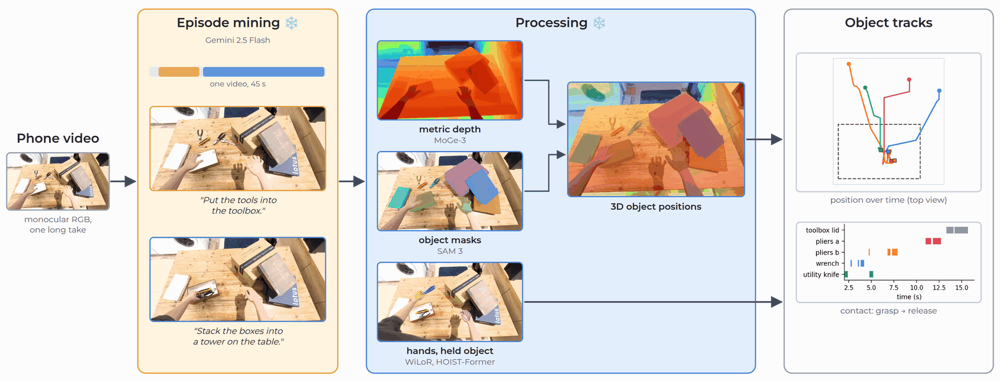
Since Gemini has already named the objects that matter in each episode, I can follow them through the video. MoGe-3 gives a metric depth map for every frame, and fitting the table plane with RANSAC gives a table-centred frame for everything else. Qwen3-VL lists what is on the table, SAM 3 keeps the names it can actually find, and SAM 3's video tracking follows each object through the episode with one identity, so its masks and the depth can be lifted to 3D positions over time. WiLoR fits a 3D hand to every detected hand, and the HOIST-Former and Hands23 contact models mark which object each hand is holding, which gives the grasp and release times.
Real-to-sim reconstruction
Rebuilding the human data in simulation lets me expand a handful of demonstrations into many more through domain randomisation, and it gives massively parallel learning that would be far too expensive in the real world. It also lets the robot learn physics that monocular phone video can't show. I use NVIDIA Isaac Sim, which I know well and which has Isaac Lab for parallel RL, domain randomisation, and RTX rendering that will matter for closing the sim-to-real gap when training vision policies later.
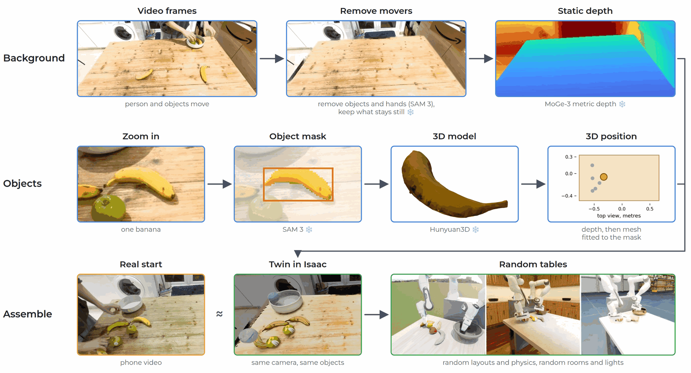
Each episode becomes its own Isaac Sim scene of my table at the start of that episode. Hunyuan3D-2.1 makes one mesh per physical object from its clearest video crop, which is reused across episodes and placed where the depth and the mask say it is. My phone doesn't move during a recording, so instead of Gaussian splatting I keep, for every pixel, the colour and depth that stay the same over the whole video, and anything that moves, including me, drops out. The twin's camera uses the phone's real pose and intrinsics, and a twin takes about 11 seconds to build, so all of them can be rebuilt whenever the builder changes.
To check the twins I project every twin object through the real phone camera and compare it with SAM 3's mask of the same object in the real start frame. Over 183 objects in 26 fruit and tool twins, the median mask overlap is 0.75 and the median centre error is 2.8 pixels out of 960.
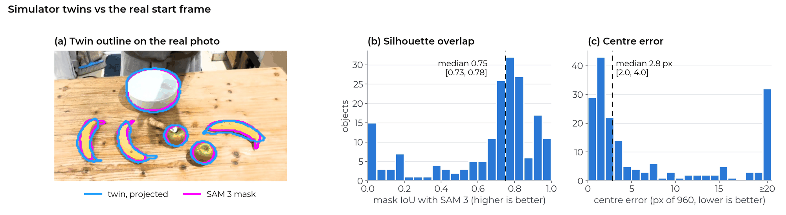
Isaac Sim then randomises physics, camera position, lighting, object positions, backgrounds and textures. Each world is drawn by a seed from Isaac's own asset libraries with nothing placed by hand, and the same demonstration plays in all of them, with my hands replaced by two robot arms that follow the 3D hands tracked from the phone video.
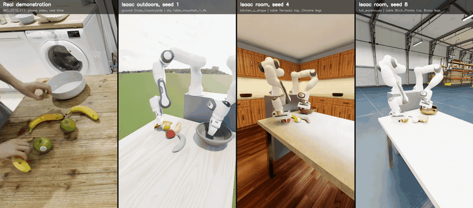
World model
The world model is the part I spent the most time on, because it replaces the person who would normally write the reward. It has to look at a scene and an instruction and say which object should move next, where it should end up and how it should get there, and it has to learn all of that only from my videos.
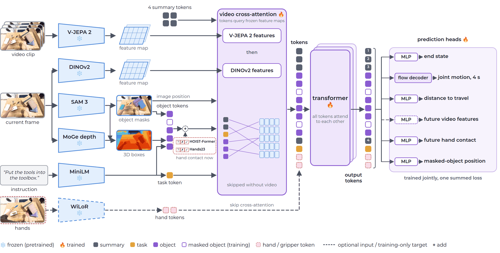
All inputs come from frozen, published models. Each object becomes a token built from its SAM 3 mask, its 3D box from MoGe depth and its DINOv2 appearance, the instruction becomes a task token through MiniLM, and the hands come from WiLoR with their contact flags. These tokens read the V-JEPA 2 and DINOv2 feature maps of the video through cross-attention, and a transformer trained from scratch lets them all attend to each other. Six heads predict where every object ends up, how they all move over the next 4 seconds, how far each still has to travel, the future video features, future hand contact and the position of a masked-out object. The motion head is a flow-matching decoder so it can imagine several paths, and all six heads are trained together with one summed loss. Video is optional, so the same model runs from the 3D tokens alone when a robot has no phone video.
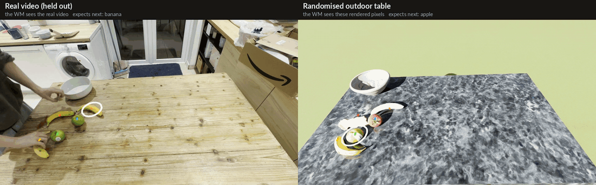
To evaluate it I hold out whole episodes, read the goals from the first frame alone as the robot's judge does, and compare them with where my hands really put each object.
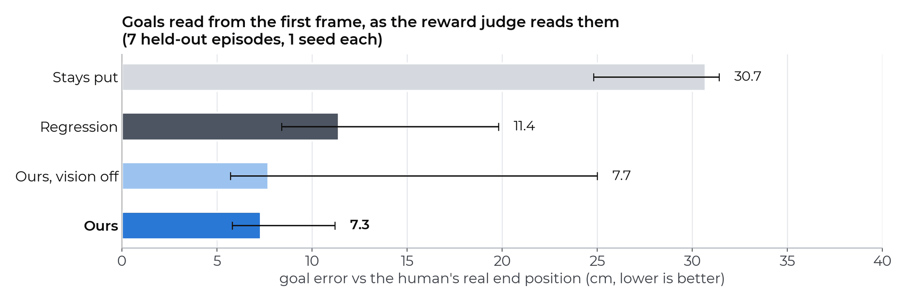
| Held-out real videos | Goal error from the first frame (cm, lower is better) |
|---|---|
| Object stays where it is | 30.7 |
| Direct regression on the same inputs | 11.4 |
| World model, vision off | 7.7 |
| World model | 7.3 |
From a single frame of an unseen scene, the world model puts the goal within about the size of a piece of fruit of where I really put it, a third more accurate than a regression model trained on exactly the same data. Played back inside the episode's own twin, its plans end 7.2 cm from my real end positions.
The video is what tells it the task. In a closed-loop test on a held-out episode, each plan the world model makes runs in physics before it looks at the table again. With the V-JEPA 2 video it puts all five fruit in the bowl, but in its 3D-only mode it decides nothing needs to move. In an environment unlike my kitchen it still starts on the fruit with the video and does nothing without it, which is what the fine-tuning below is for.
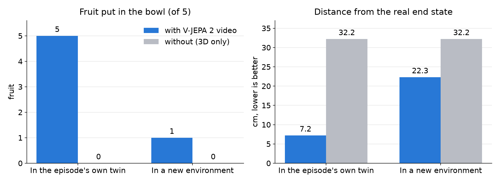
Domain-randomised fine-tuning
My videos all come from one kitchen, so the next step was to teach the world model what stays the same when everything else changes. I fine-tuned it on 10 episodes rendered in 12 randomised worlds each, 2,100 frames, and tested it on worlds unlike anything it trained on.
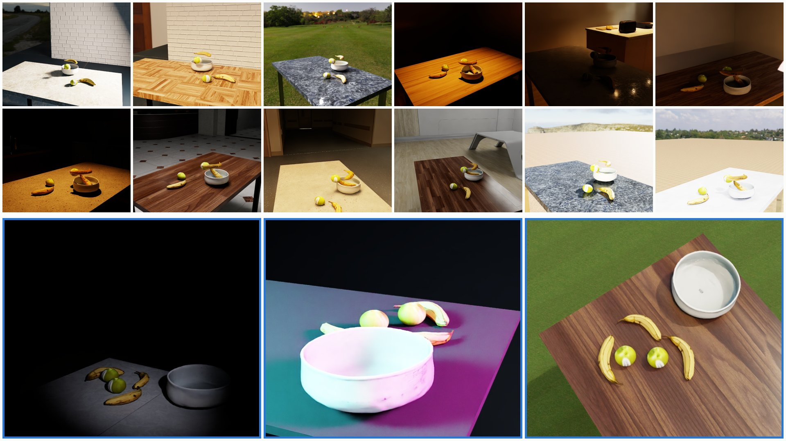
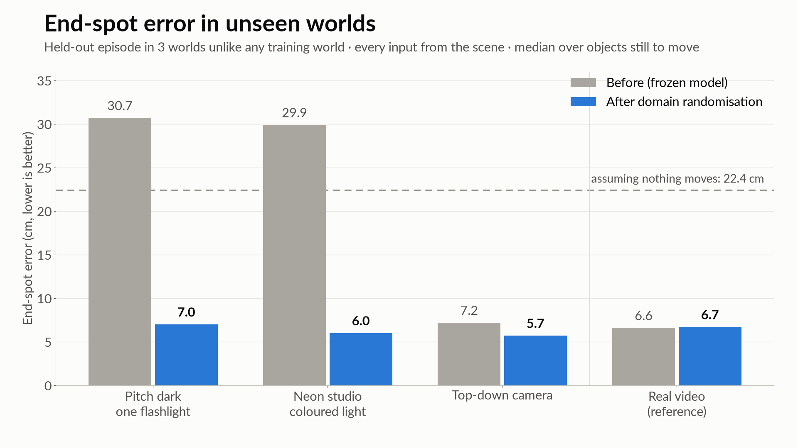
| Held-out world | Before (cm) | After fine-tuning (cm) |
|---|---|---|
| Pitch dark, one flashlight | 30.7 | 7.0 |
| Neon studio, coloured light | 29.9 | 6.0 |
| Top-down camera | 7.2 | 5.7 |
| My real video (reference) | 6.6 | 6.7 |
In the dark and neon worlds the frozen model does no better than assuming nothing moves. After fine-tuning it is as accurate there as in my own kitchen, and its error on the real video barely changes.
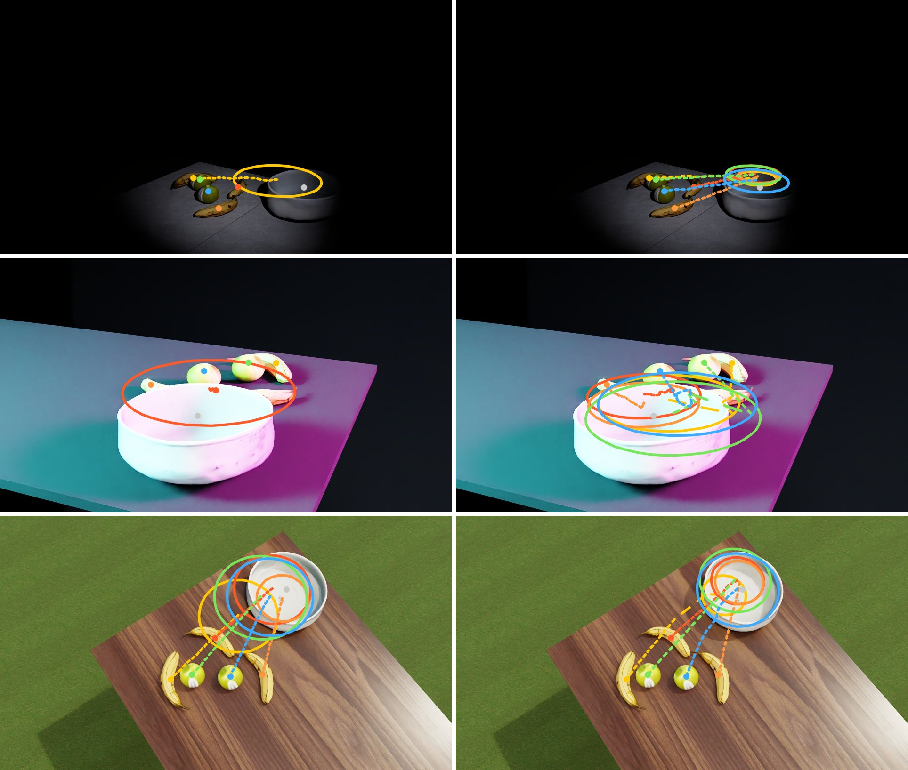
RL post-training
The world model knows what a tidy table looks like and how people move things, but not what a robot can do. The last stage post-trains it with reinforcement learning on randomised physics tables, so that it becomes an action world model that plans for the two Franka arms it drives.
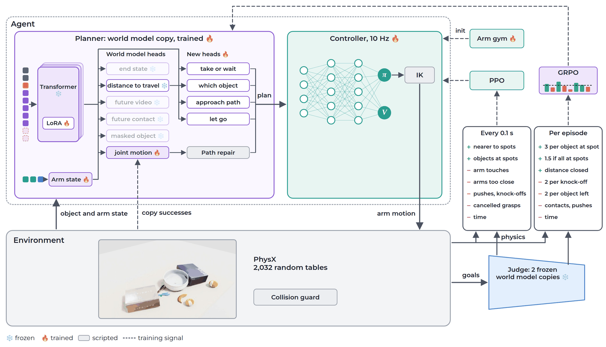
The agent has two levels. The planner is a copy of the world model with LoRA on its transformer and new heads that decide whether to start the next pick now or wait, which object to take, the approach path and when to let go. It also gets the arm state as a new input, because the world model learned from human video and has never seen a robot. I train it with GRPO once per episode, comparing several attempts at the same table and reinforcing the better-than-average ones, which needs no critic and suits a large pretrained model with one score at the end. Its object-motion head also learns from the carries that succeed, so its imagined paths move towards ones the arms can execute.
Below the planner, one controller drives both arms ten times a second through IK and is trained with PPO on a reward every 0.1 s. A judge made of two frozen copies of the world model reads every object's goal from the first frame and gives the rewards, so there is still no task-specific reward anywhere. Training runs on 2,032 randomised PhysX tables at once on one RTX 4090.
| Held-out tables (75 × 2) | Objects at their goal | Tables fully done |
|---|---|---|
| World model before RL | 10.6% | 4.0% |
| After RL post-training | 53.5% | 22.7% |
On tables it has never seen, post-training takes the robot from one object in ten to more than half of all objects at the spot the judge chose, and the number of fully cleared tables goes up more than five times.
Two-arm grasping with a pretrained lift policy
To see the plans on real grasps, I put two Franka arms on my twins with NVIDIA's pretrained Isaac Lab lift policy, which was only ever trained to lift a cube to a point in the air. The frozen world model chooses which object each arm moves, where it goes and the path it takes, and the arm carries the object along that path and lets go at its end. If the two arms' predicted motions would cross, the later one gives way, and a free arm takes the next object in the world model's order that it can reach and the other arm isn't using, with nothing trained on my side. All five objects the world model chose to move are picked up, carried along its paths and let go in the bowl.
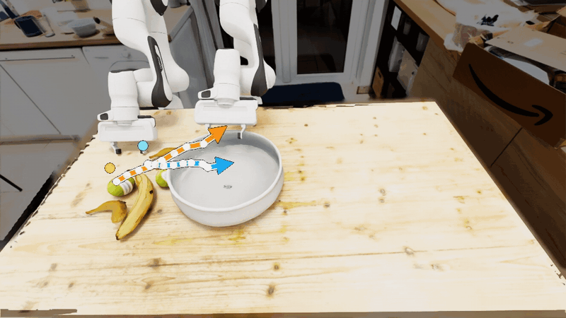
References and tools
- V-JEPA 2, Assran et al., 2025. Self-supervised video features, used for the world model's video input and future-feature target.
- Flow matching, Lipman et al., 2023. Used for the imagined object motion.
- MAE, He et al., 2022. Masked prediction, used for the masked-object position head.
- ModDrop, Neverova et al., 2015. Modality dropout, used to run the world model on 3D alone.
- Domain randomisation, Tobin et al., 2017. Used for the randomised worlds, layouts and physics.
- GRPO, Shao et al., 2024. Group-relative policy optimisation, used to train the world-model planner.
- PPO, Schulman et al., 2017. Proximal policy optimisation, used to train the two-arm controller.
- LoRA, Hu et al., 2022. Low-rank adaptation, used to post-train the world model's transformer.
- Self-imitation learning, Oh et al., 2018. Used for the object-motion head copying successful carries.
- Prioritised motion coordination, Erdmann and Lozano-Pérez, 1987. Used for the two arms giving way to each other.
The main tools are NVIDIA's Isaac Sim 6.1, Isaac Lab 3, Isaac-Lift-Franka policy and FoundationPose, Meta's V-JEPA 2, SAM 3 and DINOv2, Microsoft's MoGe-3, Alibaba's Qwen3-VL, Google's Gemini 2.5 Flash, Tencent's Hunyuan3D-2.1, WiLoR, HOIST-Former, Hands23, MiniLM and PyTorch.